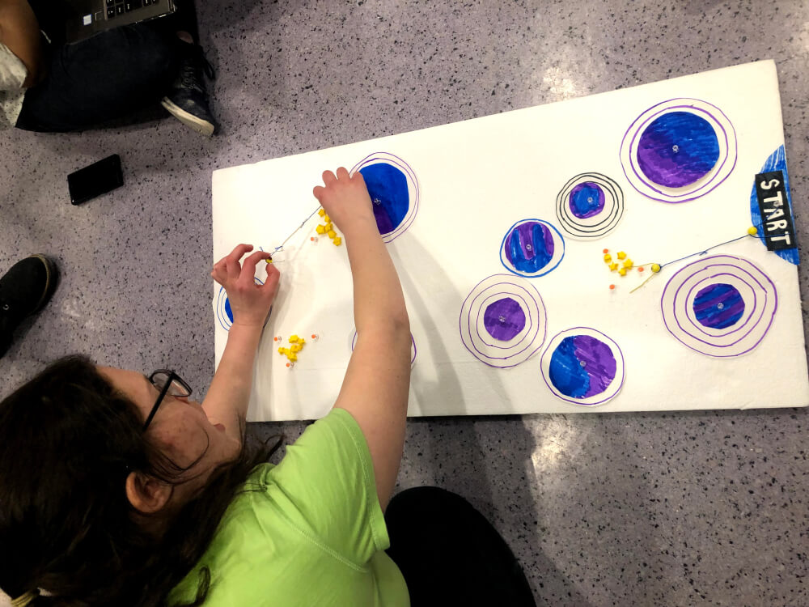
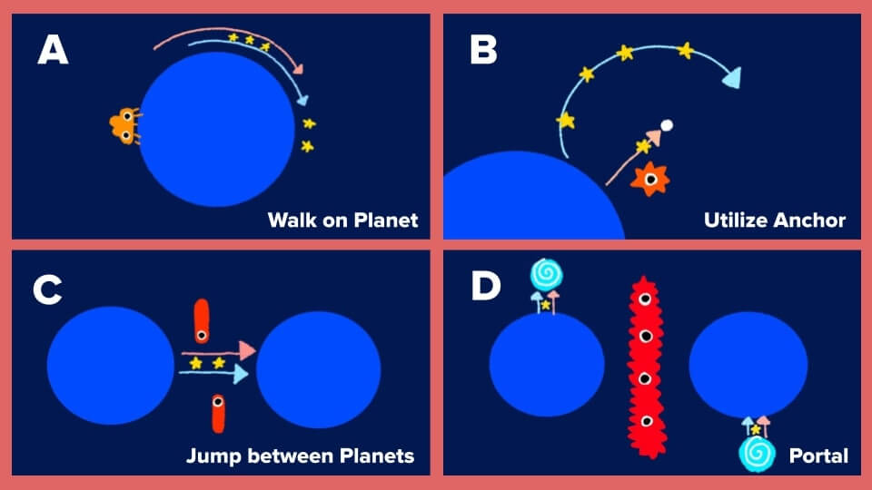
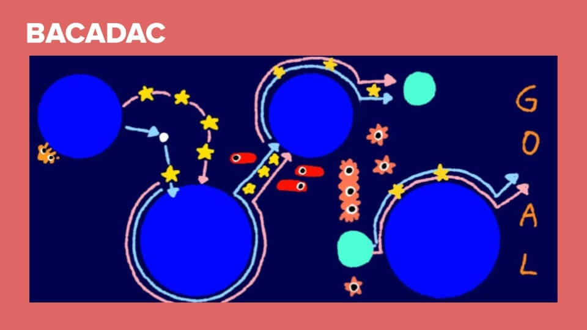
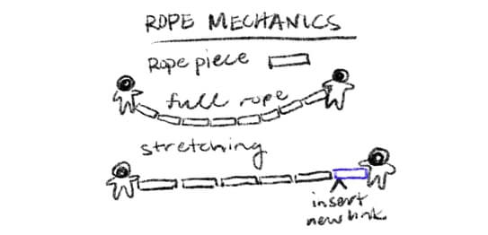
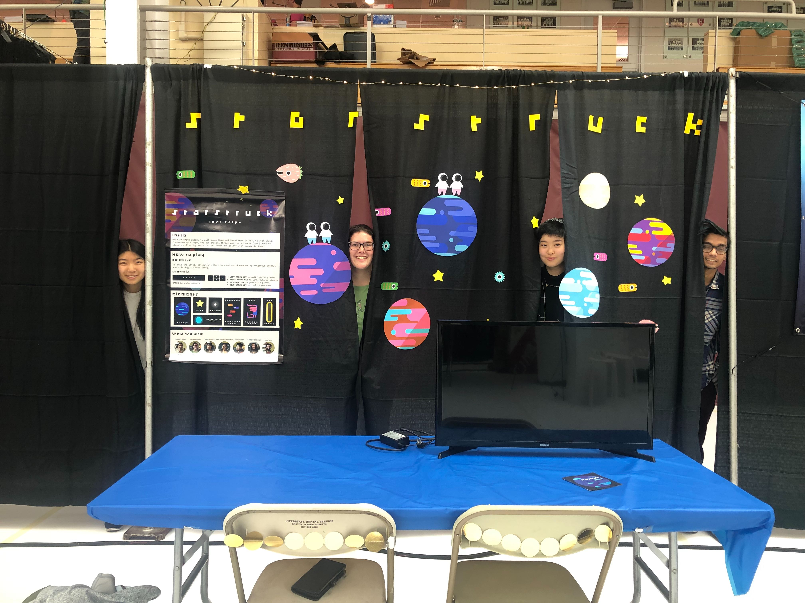
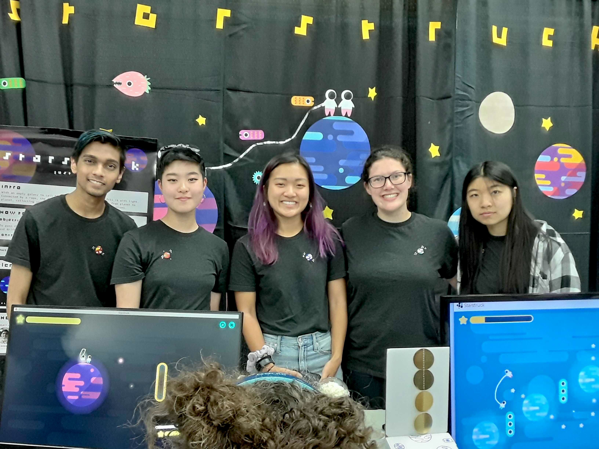

Starstruck
CS3152: Intro to Game Developmenet • Spring 2020 • Play the Game
Starstruck is a gravity-less puzzle platformer for one or two players, created by a group of Cornell undergraduates. Two astronauts connected by a rope, Nova & David, travel from galaxy to galaxy. Bouncing from planet to planet, they hop through portals, and avoid enemies to collect stars to fill their home.
I served as a programmer, focusing on the UI, and did some part-time design work.
Initial Prototyping & Brainstorming
Our initial inspiration for our game was the story of Laika, the first dog to be sent to space. What conceptually started as a dog on a leash playing fetch evolved into two astronauts connected by a rope collecting the stars. Jumping from planet to planet, they lasso around stars to fill their empty home galaxy.
In order to test the initial mechanics, we built a paper prototype. We simulated actions on a large foam board, with our characters being controlled with push pins connected by a rubber band.
Designing Levels
Our level designs were assembled from a few actions. Manipulating the enemies, portals, and position and size of the planets allowed for engaging gameplay and interesting variance between levels.
 Playtesting Prototypes
In our development cycle, we built several prototypes to playtest with gamers. With each prototype, we took notes and interviewed our playtesters and created new levels. The game went through a lot of big changes thanks to the player feedback.
Our first idea was for the rope to stretch like a rubber band. Although the rope physics were challenging to get right, we managed to implement a stretching rope. But after playtesting, players found it unintuitive and clunky, so we scrapped the stretching mechanism altogether.
The mechanic for collecting stars underwent a number of drastic changes:
- For the paper prototype, we initially wanted the rope to loop around each star to collect. The math ended up being pretty difficult, so we started with just contact with the astronauts' bodies.
- We created our first prototype’s star collection to be triggered by contact with astronaut bodies only, but also built a version where contact with the rope would also collect the stars. As soon as we debuted the latter, the gameplay became way more satisfying and way more fun!
The control scheme for the game also went through a few iterations:
- The intention was for the game to be single player, but after demoing a second set of controls for the second astronaut, it was a huge hit and became the primary control schema for the game. We also added Xbox controls for better co-op experience!
- Movement around planets was rotational, so we faced some challenges mapping this movement to the arrow keys. We started with [A] (shown above), but playtesters found it confusing. But after changing it to [B], it was even worse! We ended up sticking to our guns and keeping the original scheme.
Demoing the Game
We demoed our final game at BOOM as well as the GDIAC showcase at the end of the semester in May 2019. Students, professors, and community members in the Ithaca community gather on Cornell’s campus to playtest the games built during the semester. Audience members vote for their favorite picks.
Our game ended up winning Most Polished, judged by staff members in the Game Design community, as well as Audience Favorite. Watching people co-op the game with their friends was incredibly satisfying and a lot of fun.

We also applied to BostonFIG’s indie game showcase, BostonFIG Fest. We were accepted and showcased our game in September 2019 to the indie game development community.
 Starstruck was a ton of fun to demo, especially watching friends (and strangers!) co-op together. When I have time to kill, I always use two player controls on the keyboard (one hand per astronaut) or co-op it with a friend.
Play Starstruck